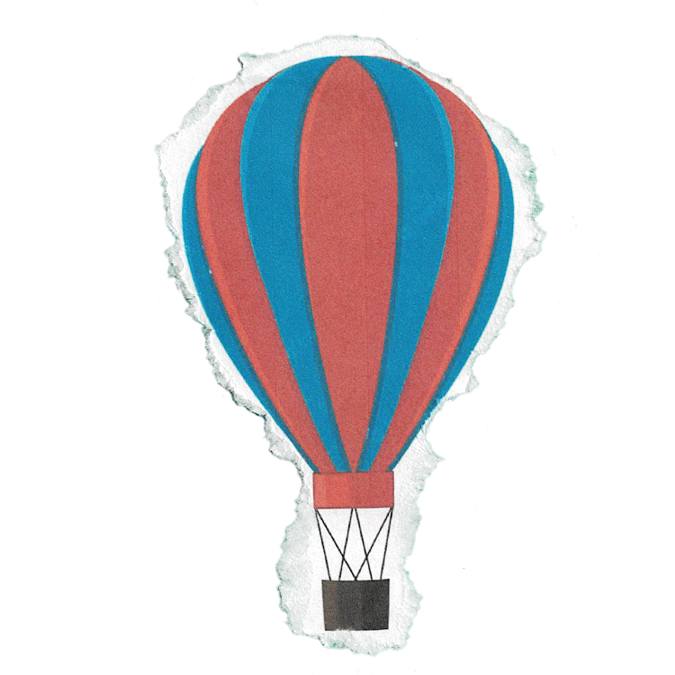
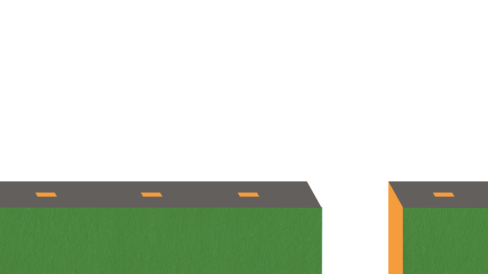
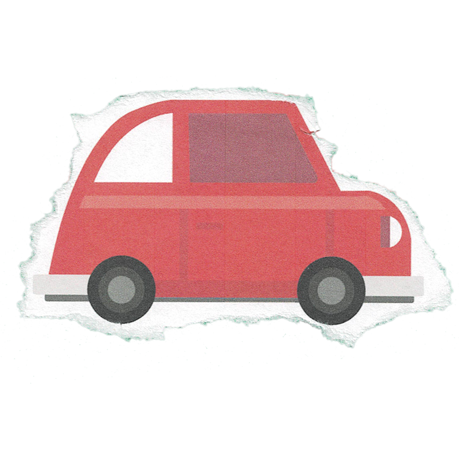
Conduire pendant plusieurs kilometres
- Timeline pour faire avancer et tomber la voiture suivi du dirigeable qui s'envole
- scrollTrigger
- trigger=#chapitre-1
- scrub=1 : Pour que l'animation est un peut d'inercie quand on scroll et que ce soit plus fluide
- pin=True : Pour que les chapitre reste fix pendant qu'ils se deroulent
Prendre son envole pour aller plus loin
- Timeline pour faire avancer la mongolfiere et faire bouger les nuages
- scrollTrigger
- trigger=#chapitre-2
- scrub=1 : Pour que l'animation est un peut d'inercie quand on scroll et que ce soit plus fluide
- pin=True : Pour que les chapitre reste fix pendant qu'ils se deroulent
Braver les Tempêtes
- Timeline pour faire bouger la mongolfiere
- SpriteSheet pour animer la pluie
- scrollTrigger
- trigger=#chapitre-3
- scrub=1 : Pour que l'animation est un peut d'inercie quand on scroll et que ce soit plus fluide
- pin=True : Pour que les chapitre reste fix pendant qu'ils se deroulent
 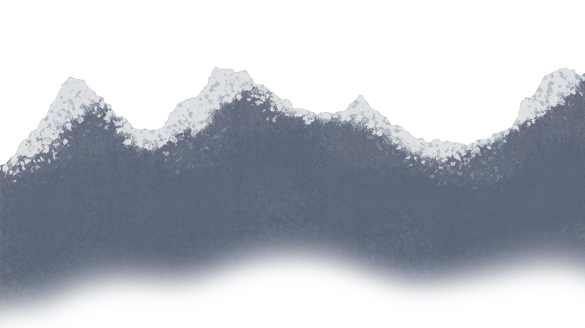
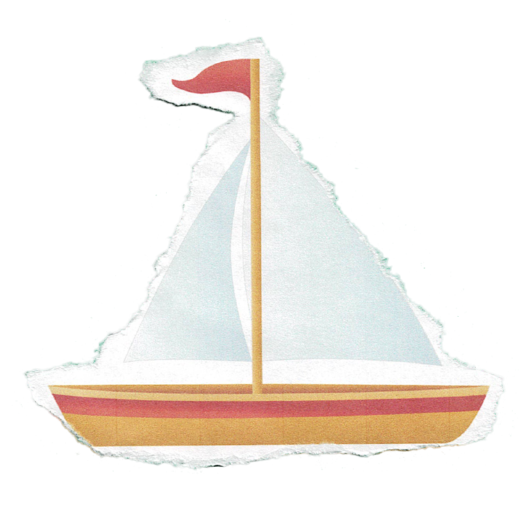
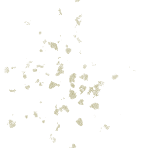
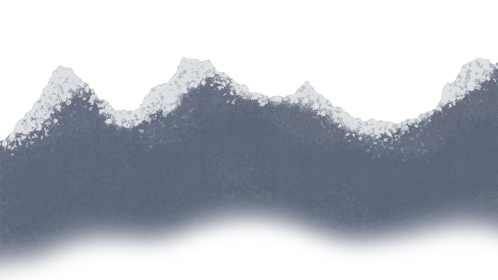
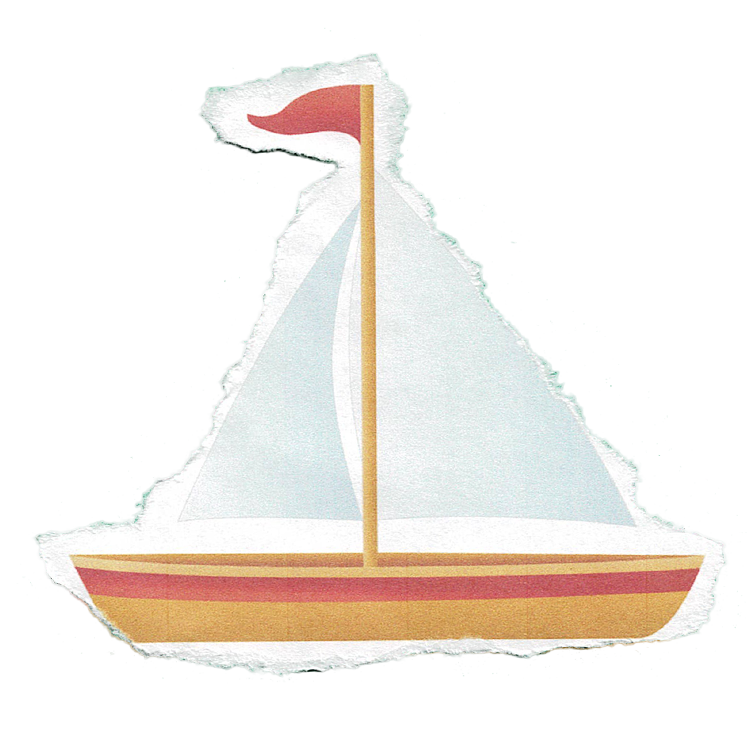
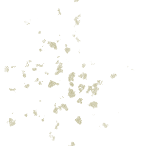
Parcourir les mers
Plonger jusque dans l'inconnue
- Timeline pour animer tout les elements du chapitre 4 et 5
- scrollTrigger
- trigger=#chapitre-4-5
- scrub=1 : Pour que l'animation est un peut d'inercie quand on scroll et que ce soit plus fluide
- pin=True : Pour que les chapitre reste fix pendant qu'ils se deroulent
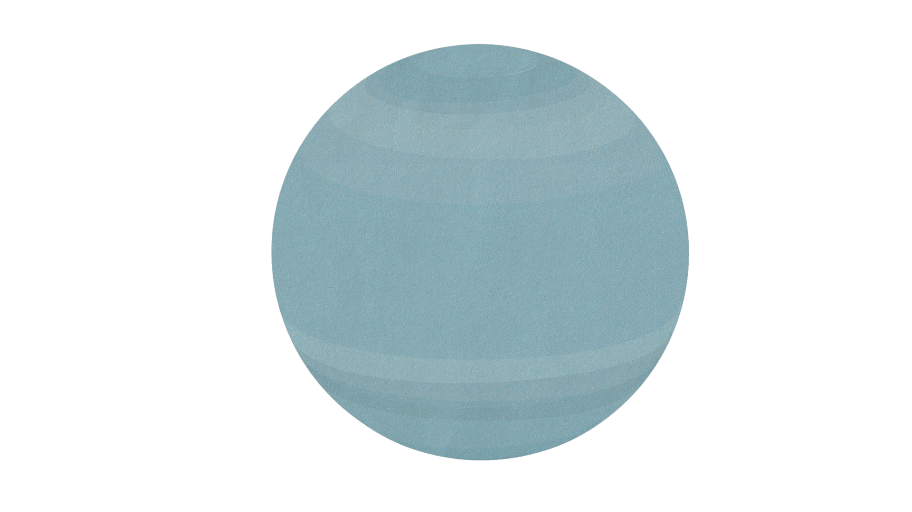
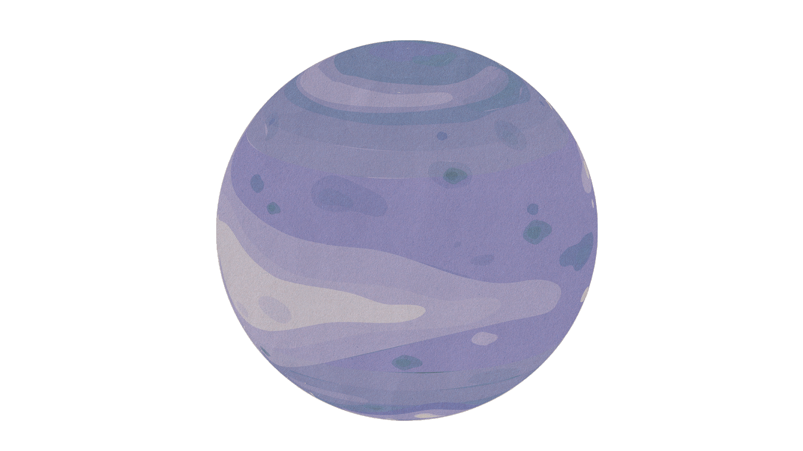
Pour finalement toucher les étoiles
- Parralax avec les planete qui defile dans l'espace
- Timeline pour animer la fusee
- scrollTrigger
- trigger=#chapitre-6
- scrub=1 : Pour que l'animation est un peut d'inercie quand on scroll et que ce soit plus fluide
- pin=True : Pour que les chapitre reste fix pendant qu'ils se deroulent